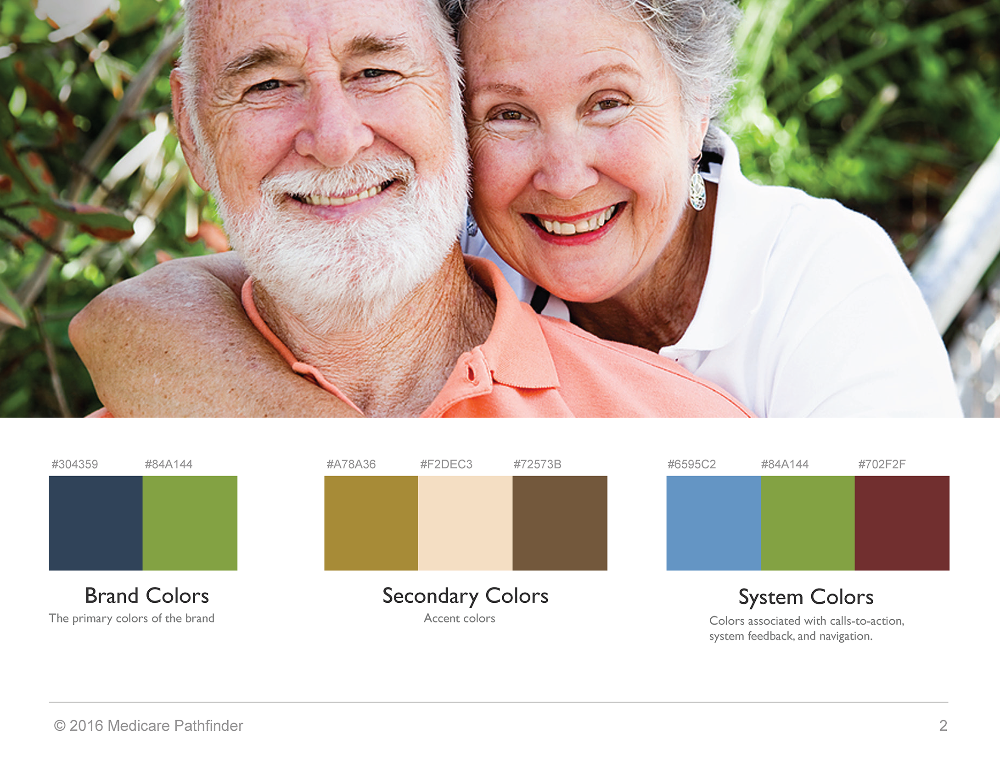
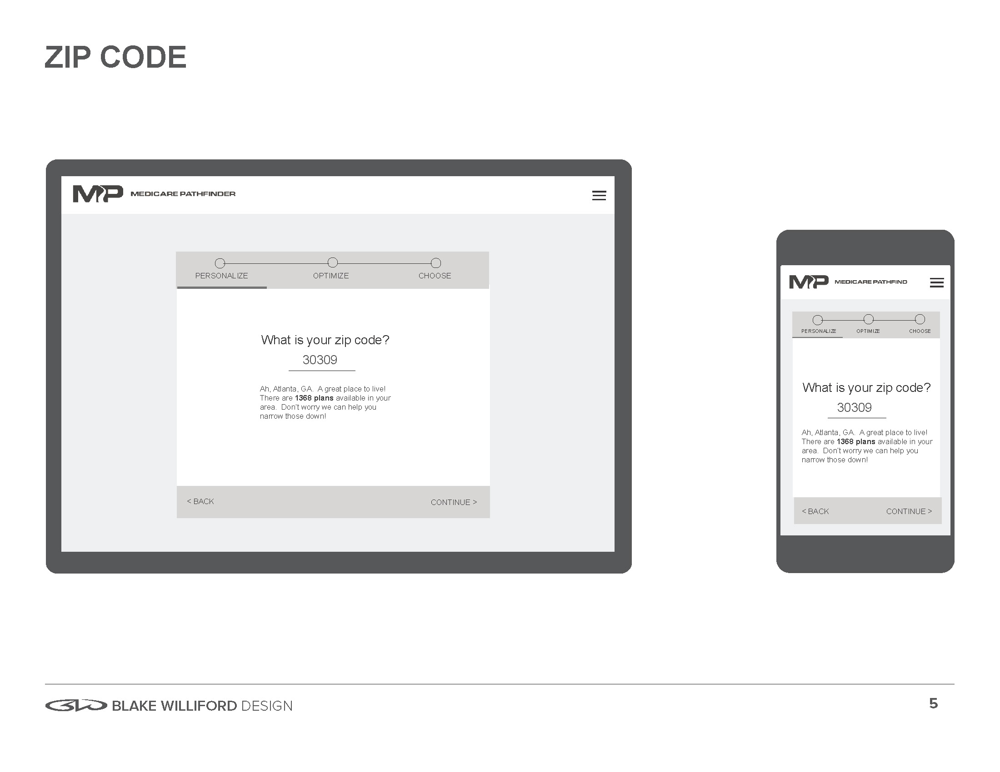
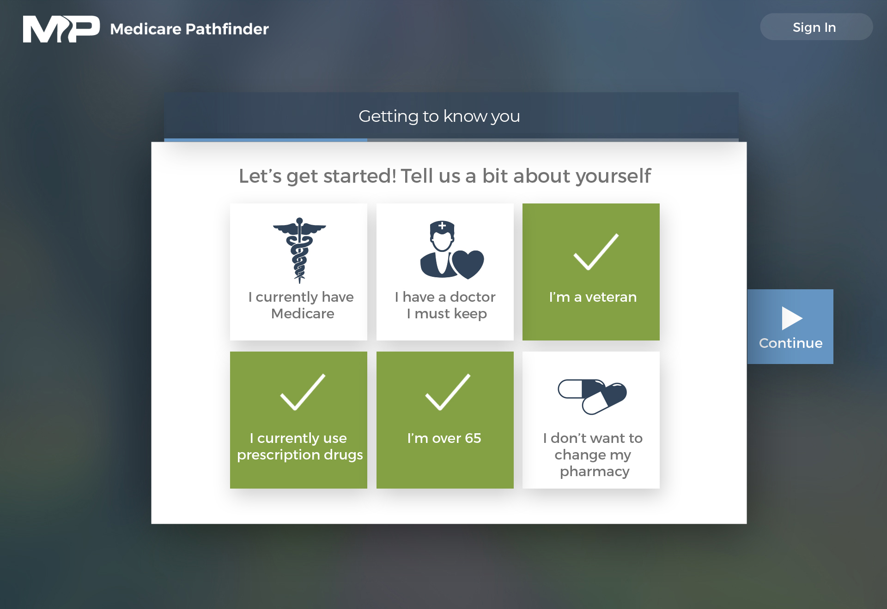

Medicare Pathfinder is a healthcare technology startup I have been working with since 2015. They are focused on artificial intelligence and data analytics serving providers to help them reduce costs and ensure their patients have the right coverage. They also have a senior-facing application that helps to match seniors with the best plans for their conditions and finances.
I have worked on numerous projects with this client and have done research, customer journeys, wireframes, UX / UI design, visual design, and front-end development / prototyping.
MY ROLE
- User Research
- UX Design
- UI Design
- Visual Design
- Prototyping
- Data Visualization
OBJECTIVES
- Empathize with seniors and understand their pain points via research and customer journey mapping
- Design an extremely simple and intuitive user experience to gather health information and connect seniors to the best plan options
- Design and prototype a data visualization / analytics dashboard for providers
- Design graphics and illustrations that communicate the value of Medicare Pathfinder software platform to providers as well as investors (VCs)
KEY RESULTS
- Helped company raise over $450,000 in venture capital
- Company won the 2016 Healthdatapalooza "Best Startup" award
- Trial partnerships established with providers as well as insurance brokers
RESEARCH
There is a huge amount of inefficiency and wasted cost in the healthcare system. 80% of seniors do not have the best plan for their needs, leading to senseless out-of-pocket costs. Meanwhile providers lose huge amounts of income due to administrative costs, patients with poor coverage, and a disadvantage to insurers in terms of their data and analytics capabilities.
From interviews with seniors as well as insurance brokers it was clear that seniors are anxious and confused when trying to find the right healthcare plan. There is a degree of choice paralysis because there are so many possible plan combinations available. I designed a customer journey chart to highlight these painpoints and form a guide for how to deliver a simple and elegant user experience that seniors can trust.
PERSONAS

RENEE
NEW RETIREE
Renee represents the most common potential user. She is an individual who has just turned 65. She is healthy for the most part with only some minor pre-existing conditions and a few drug prescriptions. She is not very tech-savvy and needs something simple and intuitive to help her find the best plan option.
- Low prescription costs
- Not likely to use full deductible
- Lower monthly premium is ideal
WENDELL
WRONG PLAN
Wendell is a 73-year old who has very poor coverage for his conditions. Without realizing it, he is paying much more in out-of-pocket costs than he should. He needs to understand that he could save a lot of money by being guided through the process and finding a better plan option.
- High prescription costs
- Will likely use full deductible
- Higher monthly premium / lower deductible is ideal
CINDY
CHRONIC CONDITION
Cindy is a 68-year old who has breast cancer and is getting chemotherapy treatments. She also has poor coverage for her specific needs, and could be saving a lot of money by switching to a different plan.
- Low prescription costs
- Will likely use full deductible
- Higher monthly premium / lower deductible is ideal
BRANDING + OTHER ASSETS
In addition to establishing a logo and consistent colors, it was important to communicate how confusing and overwhelming this process is for seniors and for the overall healthcare industry. It was also important to communicate the role Medicare Pathfinder plays in simplifying this process for both seniors and providers - particularly when talking to investors.


INSURANCE PLAN APPLICATION (WIREFRAMES)
This was a responsive web-based application that would offer a very simple and intuitive user experience for gathering health information from seniors and connecting them to best possible plan at the lowest cost. I took a lot of inspiration from applications like TurboTax, which also greatly simplify a very complex system. In TurboTax, questions are asked one at a time, and before you know it, you've gone through the entire process. Similiarly, this application only takes about 5-10 minutes.


INSURANCE PLAN APPLICATION (VISUAL DESIGN)
The implemented design was originally meant to be senior-facing, but the company pivoted and it has mostly been used by insurance brokers who sit down with the seniors and add a human element. They are there to help answer questions and assist in helping them find the best possible plan.

DATA VISUALIZATION / ANALYTICS DASHBOARD
More recently the company has pivoted to selling predictive analytics tools to insurers and providers which can help prevent them from losing money. I designed dashboard mockups for these pitches as well as developed interactive prototypes.